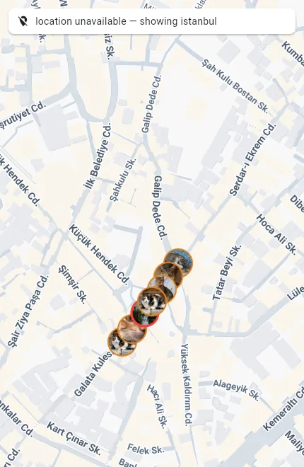

tekir is an open-source map for Istanbul's street cats.
It's early, and still being built in the open. The idea: a map-first way to know where a cat usually is, what its latest status is, and how you can help — instead of that living only in one person's memory.
- Where is this cat?
- What is its latest status?
- How can I help?
the map, right now
A real screenshot of the current Flutter app — not a mockup. Cat photos are pinned to where they were last seen; the ring around a marker shows whether that cat currently needs help.

why tekir?
Istanbul has a lot of street cats, and the people who look after them usually carry the details in their head: which corner a cat is usually at, whether someone already fed it today, whether it looked hurt last time. tekir puts that on a map instead, so it doesn't depend on one person remembering.
It isn't a place to organize rescues or volunteers — just a shared, current picture of where a cat is and how it's doing, kept up to date by whoever's nearby.
open source
tekir is developed in the open. The API, the database schema, and the Flutter app are all public, and changes land through regular pull requests.